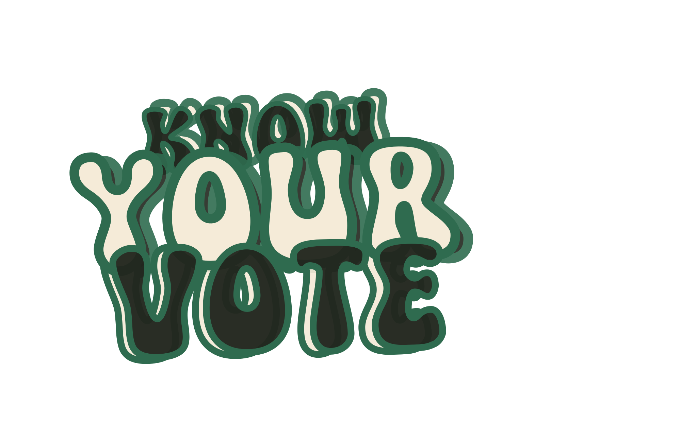

The official KYV system, anchored to the official logo — calm, trustworthy, deliberately non-partisan. Governs web, mobile, and marketing.
Human-readable mirror of docs/design.md — the tokens below render live from the same values. design.md is the source of truth.
Brand

Tokens
Tokens
Tokens
Tokens
Tokens
Tokens
easing: cubic-bezier(0.2, 0, 0, 1)
Live
Statewide · General election Nov 3 · 4 candidates
Principles